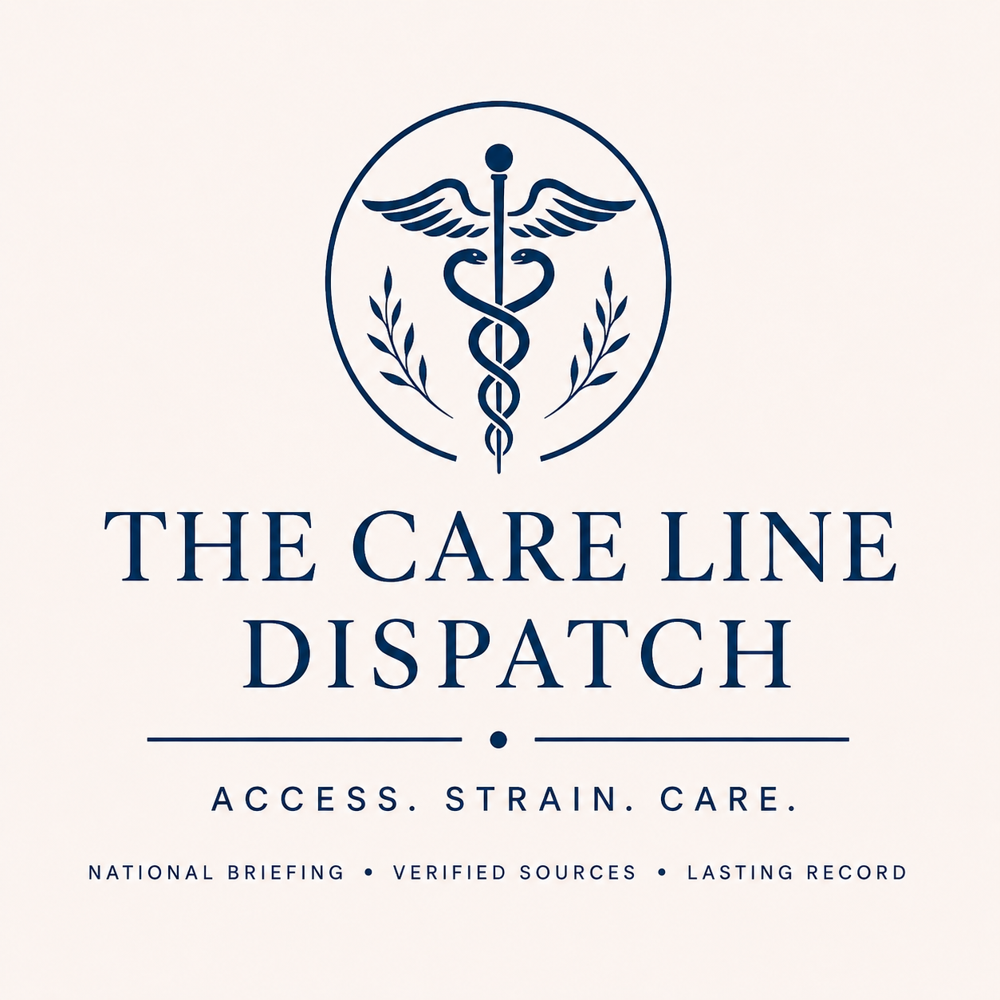

Archive
The Care Line Dispatch monitors source-backed reports of healthcare access pressure across the United States - hospital and clinic strain, rural access loss, coverage disruption, medical affordability, pharmacy access, staffing pressure, and public-health capacity cuts. It is designed for public reading, research, and accountability.
Methodist Hospitals said the Midlake campus was without power and closed, MPG appointments were rescheduled, the Gary MPG office was closed, and oxygen access shifted to Northlake. This edition uses real, traceable source records.
- 2026-08-20Limited-source update
Methodist Hospitals said the Midlake campus was without power and closed, MPG appointments were rescheduled, the Gary MPG office was closed, and oxygen access shifted to Northlake. This edition uses real, traceable source records. - 2026-06-192026-06-19 — No current update
No current Care Line update was published because the reviewed source records were stale and the reviewed source records were weak, PR, marketing, or resource-only.